Hybrid, stack and blend images through frequencies wrangling.
Introduction
This project deals with transforming images with a variety of convolutions filters, primarily Gaussian filters and Laplacian filters as well as algorithms to blend images together.
Sharpening Image
| 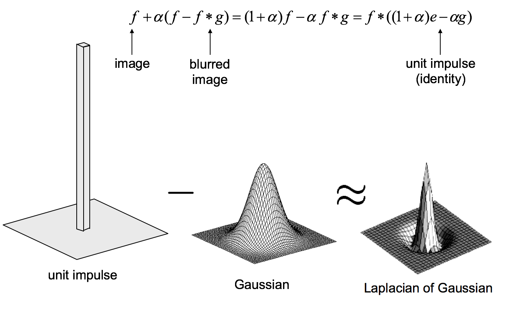 |
|---|
| Unsharp mask |
We apply the "unsharp mask" (illustrated above) to sharpen images. Simply add the difference of the original image and the gaussian-blurred image back to the original image. The effect is that edges are magnified; in frequency domain, it means high frequencies are magnified. Here are examples of sharpening Drogon and Ned.
| 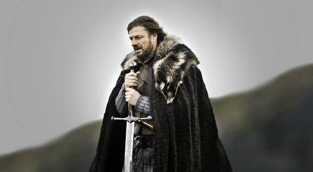 | 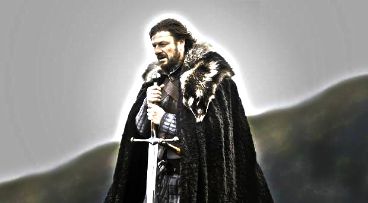 |
|---|---|
| Before | After |
| 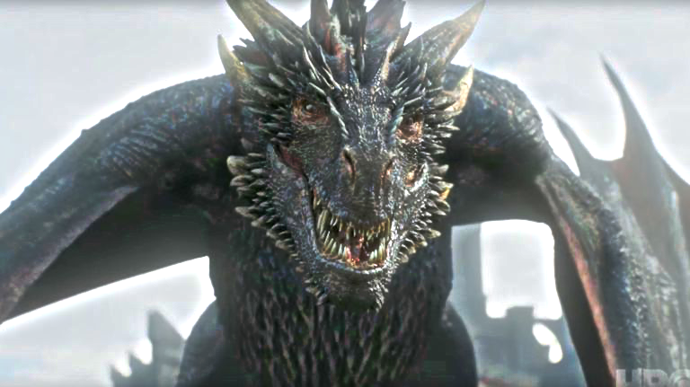 | |
|---|---|
| Before | After |
Hybrid Images
High frequency tends to dominate perception when it is available, but, at a distance, only the low frequency (smooth) part of the signal can be seen. By blending the high frequency portion of one image with the low-frequency portion of another, you get a hybrid image that leads to different interpretations at different distances. This approach was proposed in the SIGGRAPH 2006 paper by Oliva, Torralba, and Schyns.
We generate the low-pass image using a gaussian filter, and the high-pass of another image by subtracting the gaussian-blurred image from itself. Then we simply add these 2 images together to get the hybrid. Here is an example of combining low frequency part of Bran with the high frequency part of the Night King. We see Bran from far away, but when we get closer, we realize it is the Night King!
| 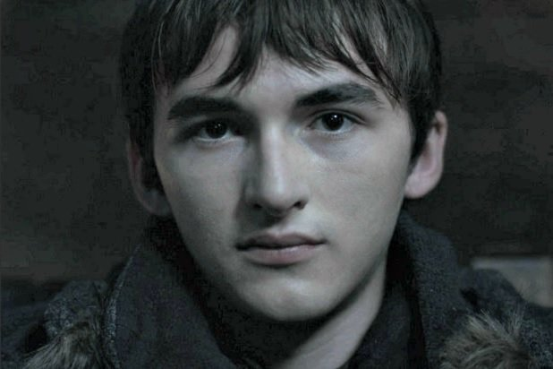 | 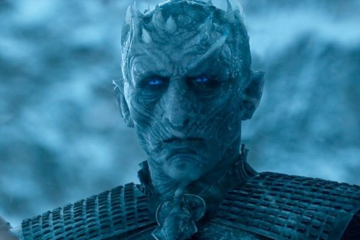 |
|---|---|
| Bran | Night King |
| 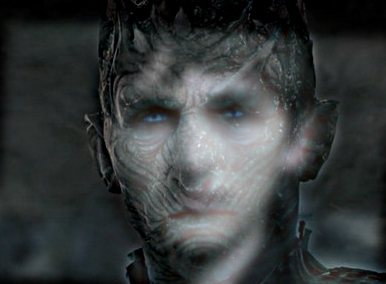 |
|---|
| Hybrid |
More interesting results
This technique gets more interesting when applied across races and gender.

|
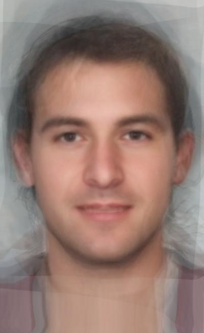 | 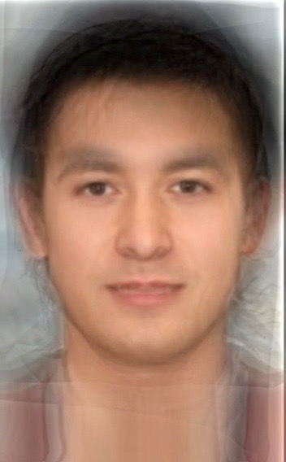 | 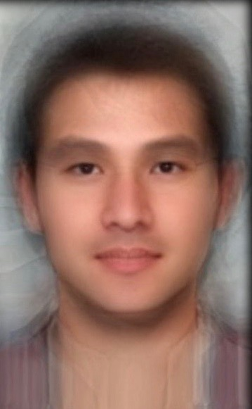 |
|---|---|---|---|
| Avg Chinese Male | Avg American Male | Low Pass: American Male | Low Pass: Chinese Male |
| 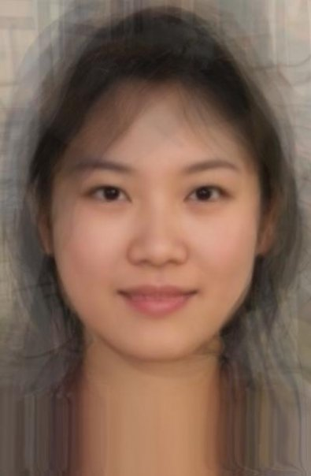 | 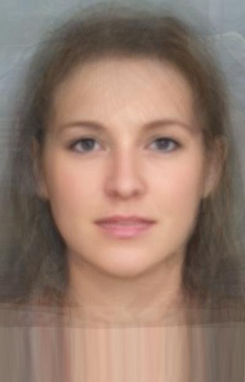 | 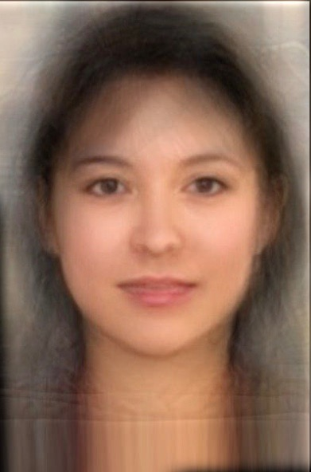 | 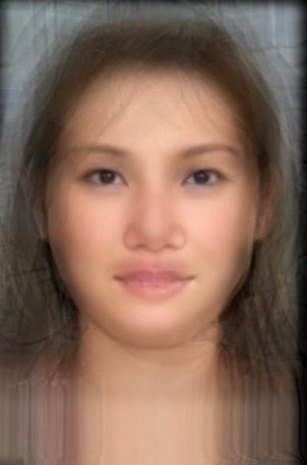 |
|---|---|---|---|
| Avg Chinese Female | Avg Swedish Female | Low Pass: Swedish Female | Low Pass: Chinese Female |
In the above examples, when looking from close distances at the third images in each row, the low pass dominates, and displays white male and female, while the fourth images look asian; however when looking from far away, the high pass dominates, and the racial profile gets reversed.
Gaussian Stacks & Laplacian Stacks
Gaussian and Laplacian stacks are similar to pyramids. The different between a stack and a pyramid is that in each level of the pyramid the image is downsampled, so that the result gets smaller and smaller. In a stack the images are never downsampled so the results are all the same dimension as the original image, and can all be saved in one 3D matrix (if the original image was a grayscale image). We use increasingly larger radius for the Gaussian filtering at each level. The radius at each level of the stack should be doubled in each level. For example, the famous painting of Lincoln and Gala by Salvador Dali (shown below) can be deconstructed into the following Gaussian and Laplacian stacks.
| 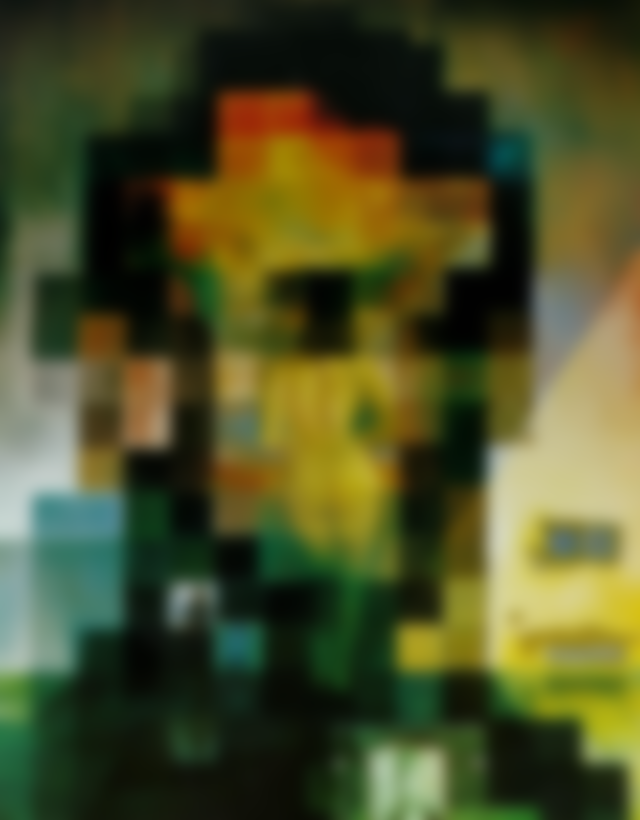 | |||
|---|---|---|---|
| Gaussian Stacks Level 0 | Gaussian Stacks Level 1 | Gaussian Stacks Level 2 | Gaussian Stacks Level 3 |
| 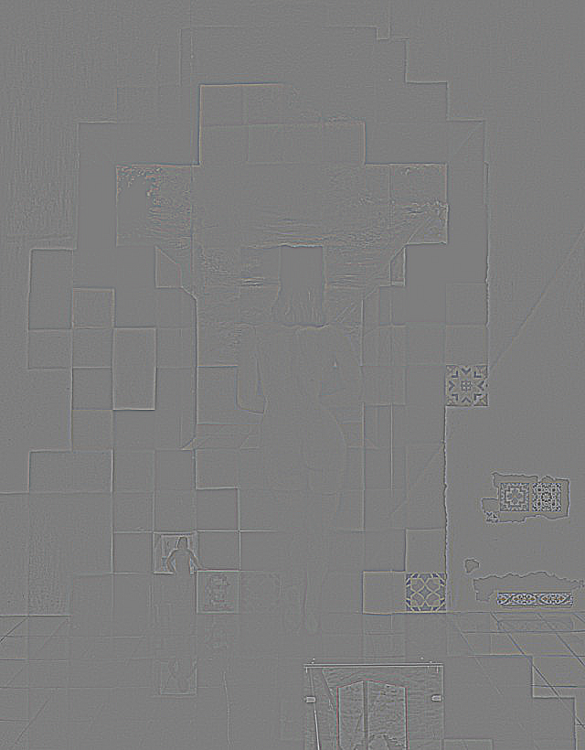 | 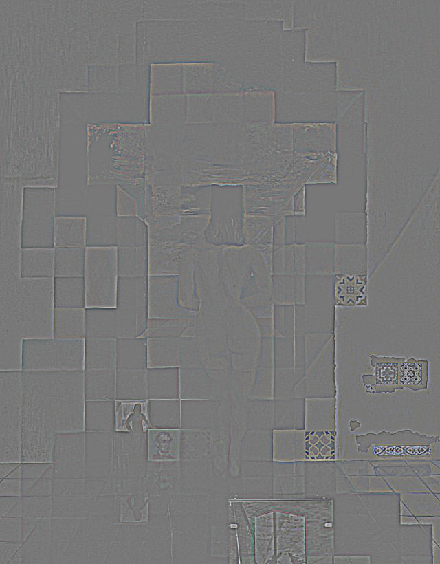 | 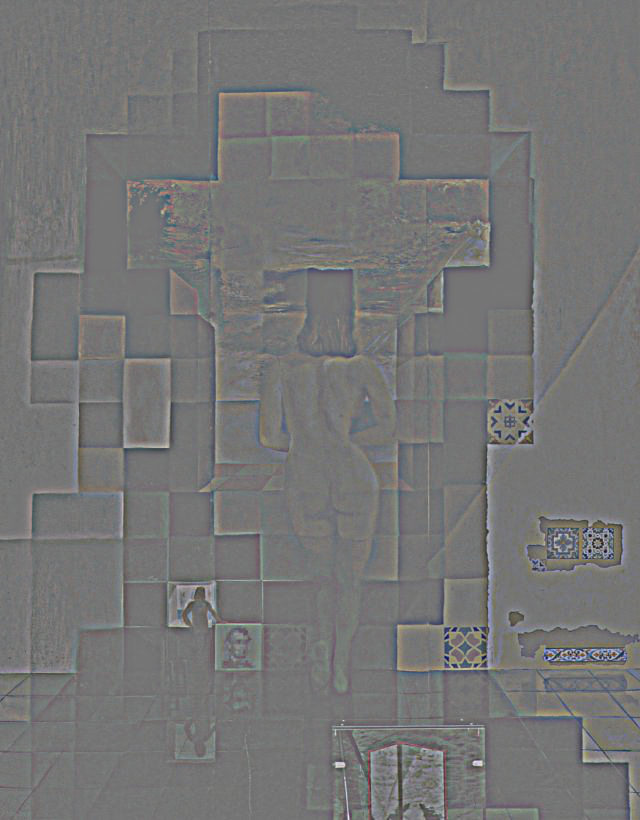 | 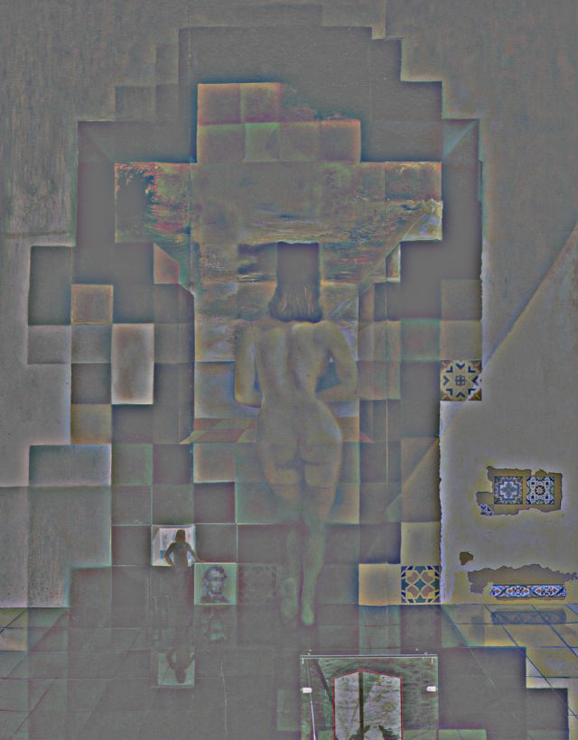 |
|---|---|---|---|
| Laplacian Stacks Level 0 | Laplacian Stacks Level 1 | Laplacian Stacks Level 2 | Laplacian Stacks Level 3 |
One of the benefits of generating Gaussian and Laplacian stacks is that we can now easily observe both low frequency and high frequency from normal distance.
Multiresolution Blending
In this part, we try to blend two images seamlessly using a multi resolution blending as described in the 1983 paper by Burt and Adelson. An image spline is a smooth seam joining two image together by gently distorting them. Multiresolution blending computes a gentle seam between the two images seperately at each band of image frequencies, resulting in a much smoother seam. In the following example, I performed a vertical seam of Jon Snow and Daenarys Targaryen.
| 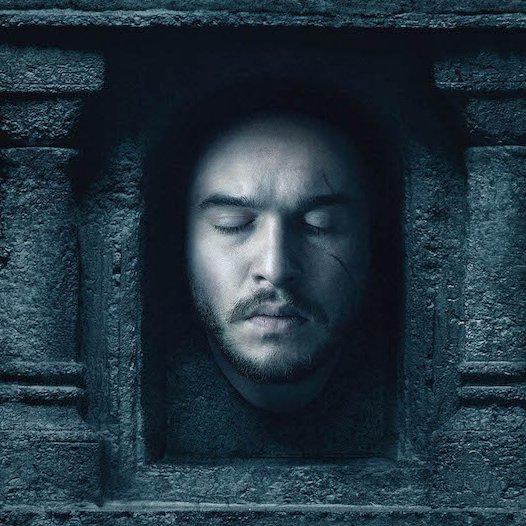 | 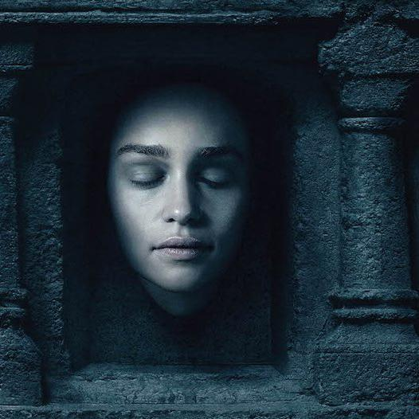 |
|---|---|
| Jon | Daenarys |
Laplacian Stacks for Jon Snow
| 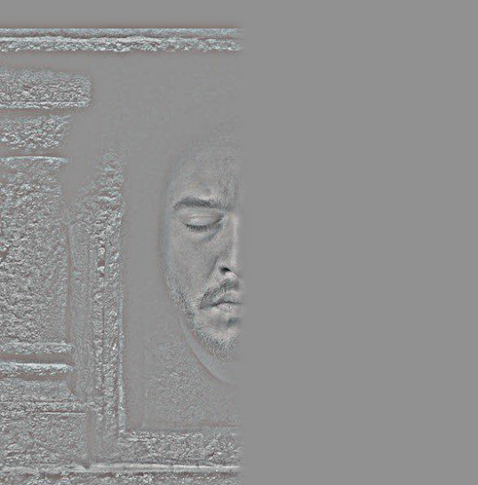 | 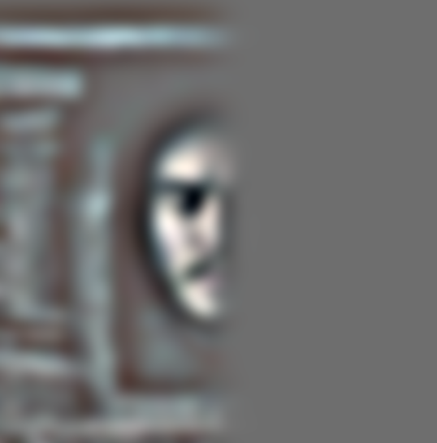 | 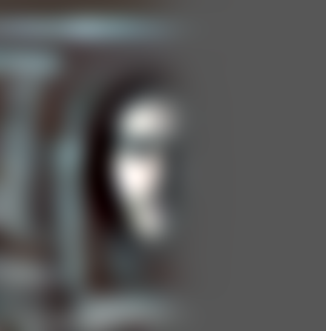 | 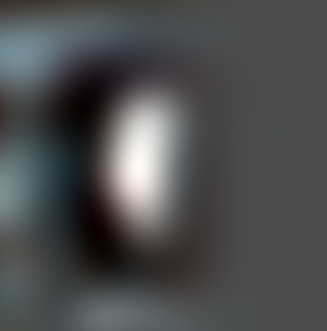 | |
|---|---|---|---|---|
| Laplacian Stacks Level 0 | Laplacian Stacks Level 1 | Laplacian Stacks Level 2 | Laplacian Stacks Level 3 | Laplacian Stacks Level 4 |
Laplacian Stacks for Daenarys Targaryen

|
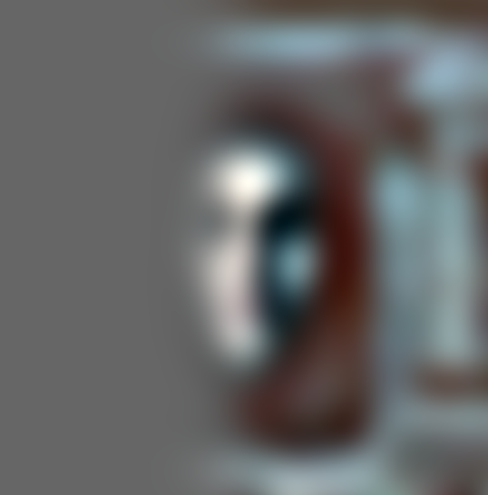 | 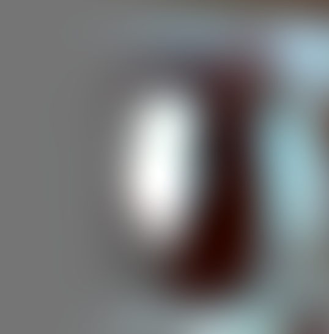 | ||
|---|---|---|---|---|
| Laplacian Stacks Level 0 | Laplacian Stacks Level 1 | Laplacian Stacks Level 2 | Laplacian Stacks Level 3 | Laplacian Stacks Level 4 |
Blended Laplacian Stacks
| 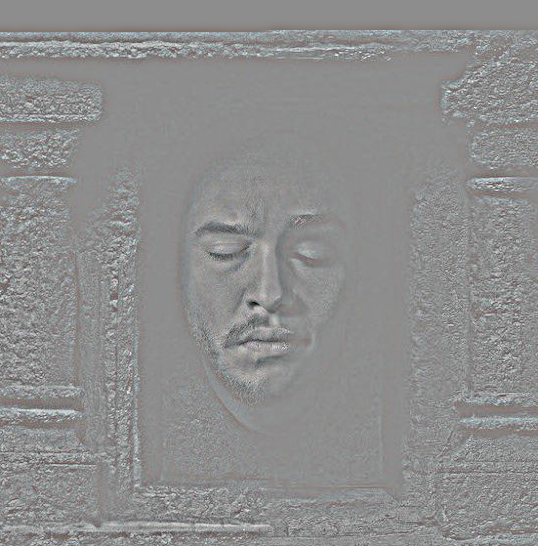 | 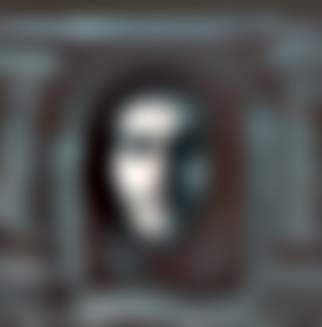 | 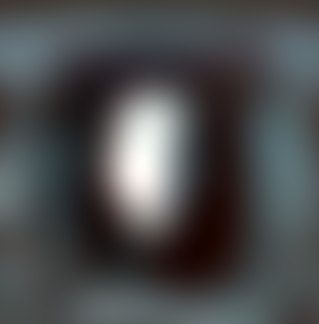 | ||
|---|---|---|---|---|
| Laplacian Stacks Level 0 | Laplacian Stacks Level 1 | Laplacian Stacks Level 2 | Laplacian Stacks Level 3 | Laplacian Stacks Level 4 |
When we combine corresponding images in each Laplacian level, the boundary between two images is smoothed out. We then simply add the low pass of the original two pictures, to the combined blended Laplacian stacks to generate the final output.
| 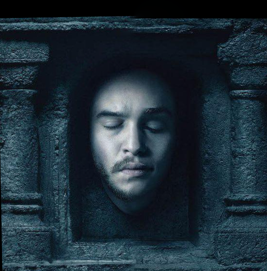 | |
|---|---|
| Naive Blend | Multiresolution Blend |
Gradient Domain Fushion
In this part, I try to seamlessly blend an object or texture from a source image into a target image. The simplest method would be to just copy and paste the pixels from one image directly into the other. Unfortunately, this will create very noticeable seams, even if the backgrounds are well-matched. Here we use the insight, that people often care much more about the gradient of an image than the overall intensity. So we can set up an optimization problem as finding values for the target pixels that maximally preserve the gradient of the source region without changing any of the background pixels. Note that we are making a deliberate decision here to ignore the overall intensity! So something green might become red, but it still looks okay. We formulate the following optimization problem:
$v = arg \min_{v} \sum_{i \in S, j \in N_i \cap S} ((v_i-v_j) - (s_i - s_j))^2 + \sum_{i \in S, j \in N_i \cap \neg S} ((v_i-t_j) - (s_i - s_j))^2$
Here, each "i" is a pixel in the source region "S", and each "j" is a 4-neighbor of "i". Each summation guides the gradient values to match those of the source region. In the first summation, the gradient is over two variable pixels; in the second, one pixel is variable and one is in the fixed target region. This method is called "Poisson Blending".
Step 1. Given a source image and a target image, we manually select the boundaries of a region in the source image and specify a location in the target image where it should be blended. Then, transform (e.g., translate) the source image so that indices of pixels in the source and target regions correspond. Ideally, the background of the object in the source region and the surrounding area of the target region will be of similar color.
Step 2. Solve the above-mentioned optimization problem.
Step 3. Copy the solved values v_i into your target image. For RGB images, process each channel separately.
| 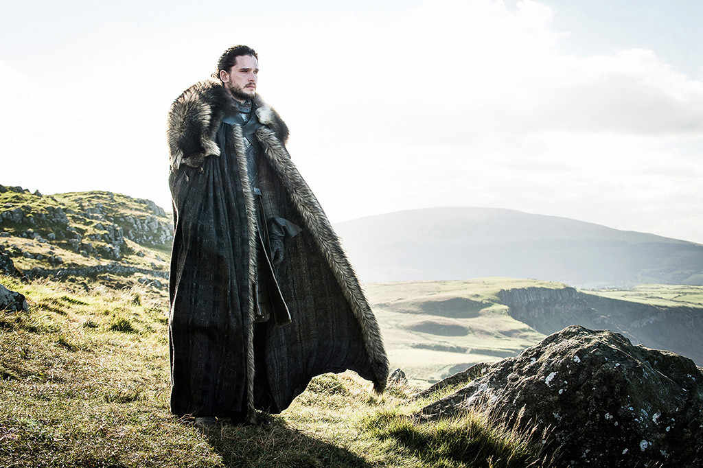 | 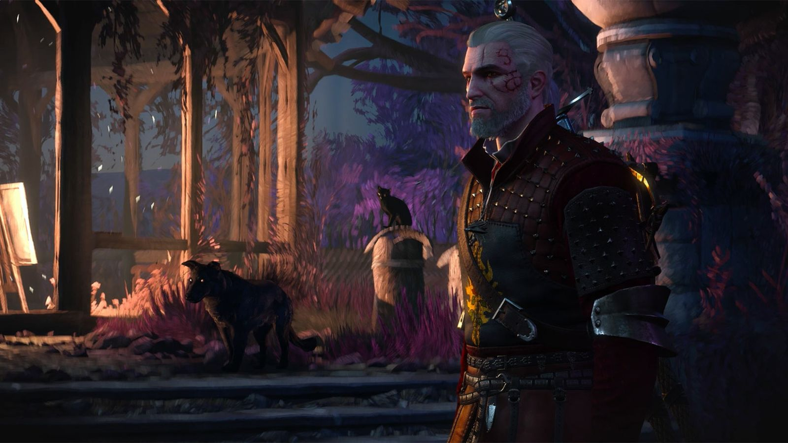 |
|---|---|
| Jon Snow | Geralt of Rivia |
| 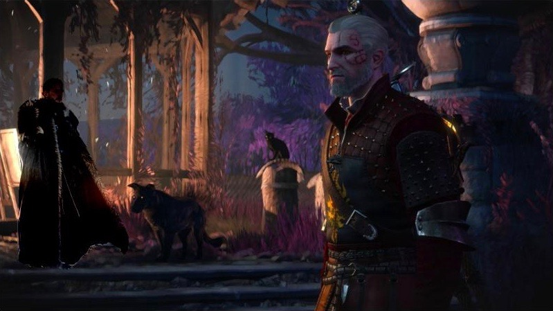 |
|---|
| Jon Snow in Iris's dream |
Here I try to blend Jon Snow into a scene in the video game, Witcher 3. The scenes' colors are not similar, but as we see above, the algorithm still does its best to blend the two images to a semi-believable state. However the result is still not perfect. For example, Jon Snow's face is turned to a weird color so that its gradients become similar to the background. In the following example, I demonstrate a better result, when blending images with similar backgrounds and tones.
| 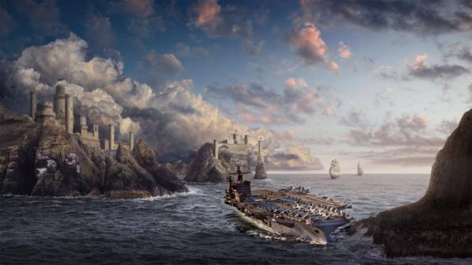 |
|---|
| A mothership blended into a medieval painting |
Note: This is a class project for CS 194-26 Image Manipulation and Computational Photography taught by Professor Alexei Efros at UC Berkeley. Full description is available here.